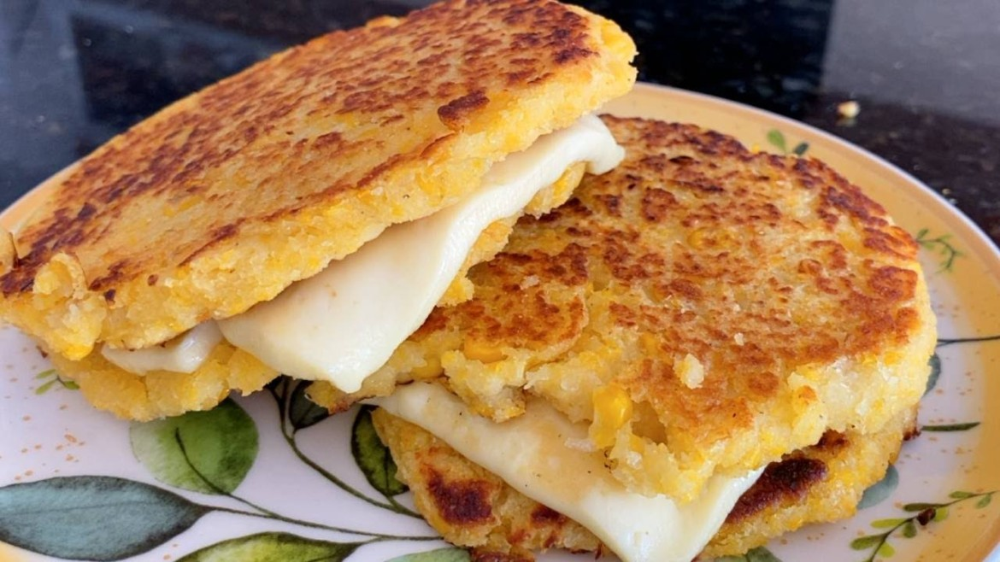

Arepas de Choclo (corn arepas)

Description
Arepas are called the native bread in Latin America, especially in
Venezuela and Colombia. Originally, they were made with a roasted corn
dough, however, given their leap to the European continent, other dairy
products were added, such as milk, butter or cheese. Also, you should know
that, currently, there are about 70 varieties of arepas, all of them with
different cooking, ingredients, utensils and varied fillings. On this
occasion, we show a Colombian corn arepa that is really delicious with its
intense corn flavor and somewhat sweet taste.
Ingredients
- 2 cups of cooked sweet corn kernels.
- Half a cup of milk.
- 1 cup of yellow corn flour.
-
A quarter cup of grated
panela.
- 1 pinch of salt.
- 2 tablespoons of butter.
Steps
-
Place the cooked corn kernels in the blender cup together with the milk,
blend until you get a mush.
-
In a bowl place the corn flour, sugar and a pinch of salt. Mix with a
spoon.
Tip: at this point, you can add grated cheese to further enrich the
dough.
-
Incorporate the corn and milk porridge to the flour, mix well with a
spoon.
-
Take a small portion with your hands to form the arepas.
Tip: the dough will be somewhat softer than plasticine.
-
Heat a frying pan and melt the butter in it. When it is melted, add the
arepas that you have formed with your hands. Then, let the corn arepas
brown on one side and then turn them over to brown on the other side. It
will take about 2 minutes on each side.
- Serve the cheese arepas with cheese very hot and right away.